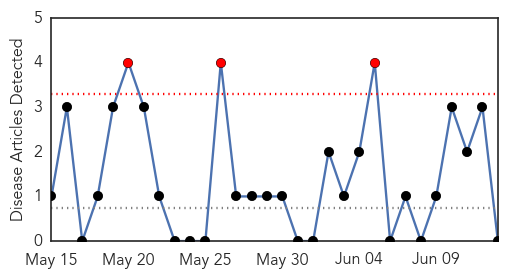
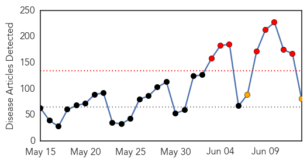
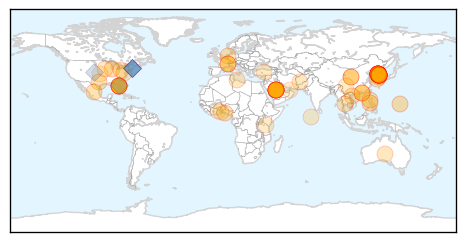

Chikungunya
30-Day Web Trend
3 alerts, 0 warnings

30-Day Twitter Trend
0 alerts, 0 warnings

Article Locations

Article Confidences

Top Articles:
-
No articles found for Jun 13, 2015
Top Tweets:
-
No tweets found for Jun 13, 2015
Unknown
30-Day Web Trend
8 alerts, 2 warnings

30-Day Twitter Trend
6 alerts, 1 warnings
Article Locations
Article Confidences
Top Articles:
- 1.000
- S.Korea MERS virus outbreak "large and complex"
- 0.999
- WHO declares MERS outbreak in South Korea as 'large and complex'
- 0.999
- MERS outbreak ‘large and complex’ — WHO – BorneoPost Online
- 0.999
- WHO to hold emergency meeting next week
- 0.999
- ‘Large & complex’ S.Korea MERS outbreak kills 14th patient, more cases expected — RT News
- 0.998
- Park postpones US trip as South Korea MERS toll hits nine
- 0.998
- South Korea MERS virus outbreak 'large and complex': WHO
- 0.998
- WHO to hold emergency meeting on MERS
- 0.998
- WHO Warns Of More MERS Cases In South Korea
- 0.998
- 14 People Dead, 12 New Infections Reported, Nearly 140 Infections Total
- 0.998
- South Korea should expect more MERS cases: WHO
- 0.997
- CDC Warns US To Be Watchful Of Symptoms
- 0.996
- More MERS virus cases expected in South Korea
- 0.996
- Wave of hope as S. Korea mulls reopening schools in MERS outbreak
- 0.995
- (3rd LD) A dozen new MERS patients reported in S. Korea
- 0.995
- WHO Urges S.Korea to Ban All MERS Suspects' Overseas Travel
- 0.992
- SKorean man thought to have MERS hospitalised in Slovakia
- 0.992
- WHO strongly advises S.Korea to ban all MERS suspects' overseas travel - Xinhua
- 0.992
- MERS outbreak in Korea may be past its peak, panel says
- 0.991
- Hong Kong on 'red alert' as South Korean MERS virus spreads
- 0.991
- Experts Fault South Korean Response to MERS Outbreak
- 0.991
- S.Korean man thought to have MERS hospitalised in Slovakia
- 0.990
- South Korean man thought to have deadly Mers virus hospitalised in Slovakia: Official, Europe News & Top Stories
- 0.990
- South Korean man thought to have deadly Mers virus hospitalised in Slovakia: Official, Europe News & Top Stories
- 0.989
- Poor nations concerned about coping with MERS
- 0.988
- MERS leaves Seoul a ghost town
- 0.988
- MERS infectees may have worsened outbreak: WHO
- 0.988
- South Korea Reports Four New Cases of MERS, Total 126
- 0.986
- Experts downplay MERS crisis; S. Korea records 14th death
- 0.985
- WHO to hold soon MERS emergency meeting
- 0.979
- More cases of MERS likely in South Korea says WHO
- 0.979
- (LEAD) S. Korea reports additional death from MERS, 12 new cases
- 0.975
- Thousands of South Koreans isolated after 14 camel flu victims
- 0.972
- Governor's office says South Korean visitor did not have MERS virus
- 0.970
- MERS Infections in S.Korea Increase to 138, 14 Dead
- 0.969
- Seoul a Ghost Town Amid Fears of Deadly Mers Virus
- 0.965
- South Korean Government’s Failure in Sharing Information Worsened MERS Outbreak
- 0.962
- Suspected MERS case in Slovakia
- 0.954
- 12 new cases of MERS, 138 in total infected, 14 dead
- 0.949
- South Korea advised to ban MERS suspects from travelling
- 0.929
- Strict screening sought for travellers from S.Korea
- 0.926
- KBS World Radio
- 0.919
- China's airliners strengthen MERS procedures- China.org.cn
- 0.917
- Chicago Tribune
- 0.917
- Chicago Tribune
- 0.917
- Chicago Tribune
- 0.890
- Vietnam province forms MERS-fighting team following sudden death of South Korean man
- 0.888
- Students of nursing college infected with MRSA, protest held
- 0.881
- Woman diagnosed with drug-resistant TB sends CDC on a mad chase for possible victims
- 0.876
- Health officials Vibrio vulnificus kills 2 in Florida
Showing top 50 articles...
Top Tweets:
- 0.951
- 2/2 I doubt the EC will call MERS a public health emergency. Korean outbreak is a wakeup call, but not a different pattern for the virus.
- 0.903
- SKorean MERS update now up to 138 cases, 14 deaths. Could become biggest MERS hospital outbreak ever. Record is 150 - 200 cases in KSA.
- 0.759
- RT: SKorean MERS update now up to 138 cases, 14 deaths. Could become biggest MERS hospital outbreak ever. Record is 150 - …
- 0.759
- RT: SKorean MERS update now up to 138 cases, 14 deaths. Could become biggest MERS hospital outbreak ever. Record is 150 - …
- 0.667
- Imagina un mundo en el que todo el tiempo $$$ que se consume en las iglesias se usara para la educación pública y la conservación natural.
- 0.621
- .@WHO Emergency Committee on MERS to meet Tues. Has met 8 times, never declared MERS a public health emergency. Will they this time? 1/2
- 0.612
- .@mmbtox I think the drubbing took after 2009 pandemic influences their thinking. Flu experts still insist it was a pandemic, tho. 1/2
- 0.551
- RT: Joint MERS mission finds control lapses in complex outbreak (as Korea reports 12 new cases, 3 more deaths) http://t.co/YKqdSCm…